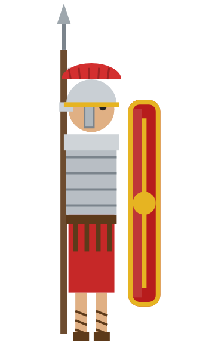
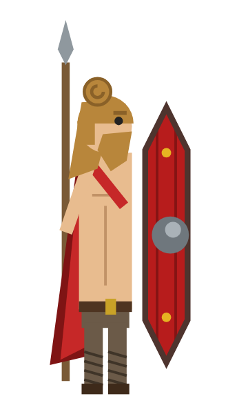
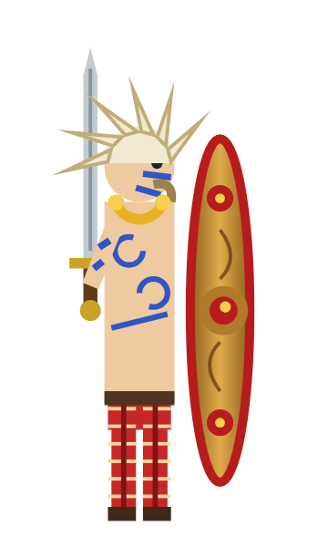

Augustus
Augustus became Rome's first emperor in 27 BC and ruled until his death in AD 14, about 41 years. The month of August is named after him, just as July is named after Julius Caesar, who was never actually an emperor.
Anno MMXXVI
Pick your warrior, choose your missile, raise your shield and defend your honour against the computer.
Enter the arenaChoose your warrior, opponent, projectile and difficulty, then click To battle! Click inside the game first if you want to use the keyboard.
Pick a Roman legionary, a Germanic warrior or a Briton, choose your opponent (or Random), then slide the difficulty from Easy to Hard.
Fight with an arrow, a long pilum, a spinning throwing axe or a speedy sling stone. Each one flies a little differently.
Move with the mouse, touch, W/S or the arrow keys. Catch the projectile on your shield.
Hit it near the top or bottom of your shield to send it flying back at a sharper angle.
Every block makes it faster. Let one past and your opponent scores. Space pauses, M goes back to the menu.
First to VII points wins, and you get a Roman fun fact whether you win or lose.
You fight in red. The computer fights in blue.

The professional
Crested galea helmet, lorica segmentata armour, a big curved rectangular scutum and a pilum: a heavy javelin with a long iron shank.

From beyond the Rhine
Hair tied in a Suebian knot, a cloak and trousers, a tall painted wooden shield with an iron boss, and the framea spear. In AD 9 the Germanic leader Arminius wiped out three Roman legions in the Teutoburg Forest.

Defender of the island
Julius Caesar wrote that Britons dyed themselves blue (probably with woad). Spiky limed hair, a gold torc, checked trousers, a long sword and a bronze shield inspired by the Battersea Shield found in the Thames.
Twelve facts about the Roman Empire and its emperors, including three busted myths.
Press the button for a random Roman fact.
Augustus became Rome's first emperor in 27 BC and ruled until his death in AD 14, about 41 years. The month of August is named after him, just as July is named after Julius Caesar, who was never actually an emperor.
Myth: Caligula made his horse Incitatus a consul.
Fact: Ancient writers only say he planned to. It never happened, and the story may be exaggeration or a joke aimed at the Senate. The horse did reportedly have a marble stall and an ivory manger.
Myth: Nero fiddled while Rome burned in AD 64.
Fact: The fiddle hadn't been invented yet. Tacitus says Nero was away at Antium when the fire began, then came back and opened his gardens to the homeless. Rumours did say he sang about the fall of Troy.
Born in Hispania (modern Spain), Trajan was the first emperor from outside Italy. Under him the empire reached its greatest size in AD 117. Trajan's Column in Rome tells the story of his Dacian Wars in a spiral frieze.
Hadrian ordered a wall across northern Britain in AD 122. It ran about 73 miles (80 Roman miles) from the River Tyne to the Solway Firth, and long stretches still stand today.
The philosopher-emperor wrote his Meditations in Greek as private notes to himself, many while on campaign against Germanic tribes along the Danube. People still read them nearly 2,000 years later.
Marcus Aurelius's son loved to fight as a gladiator in the arena and liked to be shown as Hercules. He was strangled in AD 192 by a wrestler called Narcissus.
Constantine was proclaimed emperor by his troops at York (Eboracum) in AD 306. He was the first emperor to become a Christian, and in AD 330 he founded Constantinople, today's Istanbul.
AD 69 is called the Year of the Four Emperors: Galba, Otho, Vitellius and finally Vespasian all ruled Rome within twelve months.
The Romans founded London (Londinium) around AD 47–50. In about AD 60–61 Boudica, queen of the Iceni, led a revolt that burned it to the ground. Archaeologists still find the red layer of burnt debris.
Myth: Romans had special rooms to throw up in so they could keep feasting.
Fact: A vomitorium was a passageway that let crowds "spew out" of an amphitheatre quickly.
The Western Roman Empire ended in AD 476, when the last western emperor, Romulus Augustulus, was deposed. The Eastern Roman Empire lasted almost another thousand years, until Constantinople fell in 1453.